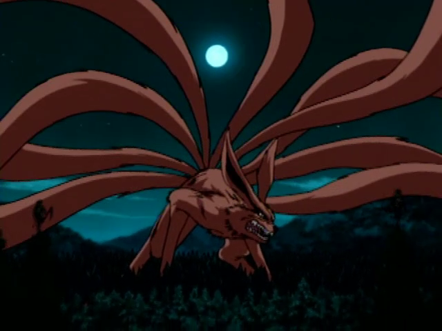
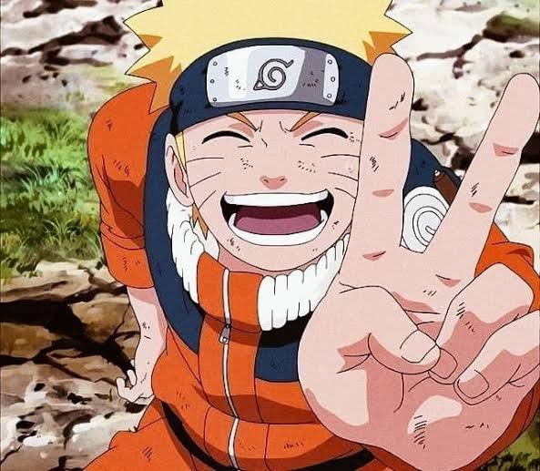
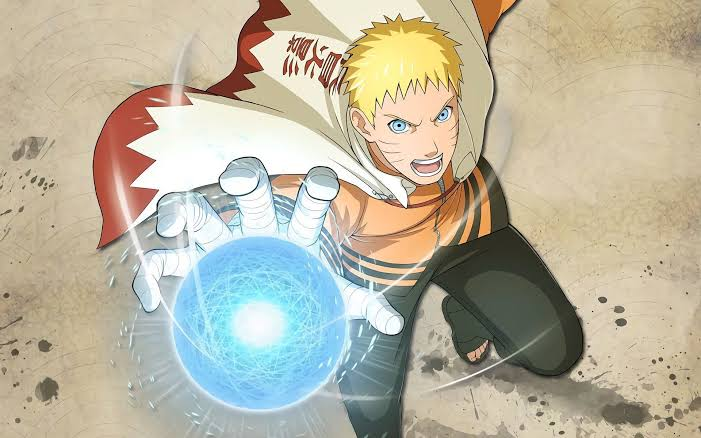

NARUTO UZUMAKI

Naruto Uzumaki is the main protagonist of the popular Japanese manga and anime series Naruto. He is a young ninja who aspires to become the strongest ninja in his village and one day become the leader of the village, known as the Hokage. Naruto is a member of the Uzumaki clan, a family known for their strong life force and powerful chakra.

When Naruto was just a newborn, the nine-tailed fox, a powerful and destructive creature, attacked his village and caused widespread destruction. In order to protect the village from the fox's rampage, the Fourth Hokage, Minato Namikaze, sealed the fox within Naruto. This act saved the village but also left Naruto ostracized and mistreated by the other villagers, who were afraid of the fox's power and blamed Naruto for the tragedy. Despite this, Naruto was determined to become a ninja and prove to the village that he was not the monster they thought he was.

Throughout his journey as a ninja, Naruto faced many challenges and struggles. He was often underestimated by his peers and looked down upon by the older generation of ninja because of the fox sealed within him. However, Naruto never let this discourage him and always pushed forward with determination and perseverance. He also had a natural talent for ninja techniques and was able to learn and master many powerful skills and abilities.

Despite the obstacles he faced, Naruto remained optimistic and never lost sight of his dreams. He was also kind and compassionate, always striving to protect and help those around him. He formed close bonds with his fellow ninja and formed a team known as Team 7 with Sasuke Uchiha and Sakura Haruno. Together, they faced many challenges and grew as ninja, becoming some of the strongest and most respected ninja in the village.

In the end, Naruto's hard work and determination paid off and he was able to achieve his dream of becoming the Hokage. He became a respected and beloved leader, known for his strength and compassion. Naruto's journey teaches valuable lessons about perseverance, determination, and the importance of never giving up on one's dreams.
